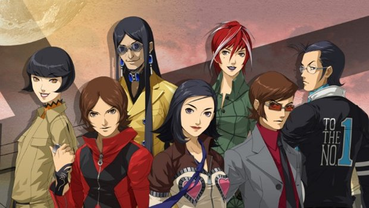

Sinopsis
Persona 2 es un videojuego perteneciente al género de rol, hecho en Japón para la PlayStation, desarrollado por Atlus. Innocent Sin ( 罪 Tsumi ? ) y Eternal Punishment ( 罰 Batsu ? ) son los dos capítulos de la misma historia. El videojuego es una secuela directa de la primera entrega de la saga Persona, con varios personajes de ese título jugando varios roles en ambos juegos. Situados en la metrópoli de ficción de Sumaru City, Innocent Sin sigue a un estudiante de secundaria llamado Tatsuya Suou. Eternal Punishment, tiene lugar después, aquí se centran en Maya Amano, joven reportera de una revista para adolescentes. Ambos personajes tienen experiencias que transportan a la esfera de Philemon, un ser que existe fuera del mundo y hace vigilia astral cercana a la muerte. Philemonn les otorga la capacidad de convocar a una Persona, un alter ego que se manifiesta como una figura mitológica.
¿Donde puedo jugarlo?
Aunque la versión de PlayStation de Innocent Sin nunca recibió un lanzamiento oficial en América del Norte, una versión para PSP fue lanzada oficialmente el 20 de septiembre de 2011, tanto en América como en Europa. La versión de PSP de Eternal Punishment no pudo ser puesta en venta en América por "circunstancias inusuales", en vez de esto se volvió a lanzar la versión de PlayStation en PSN.
